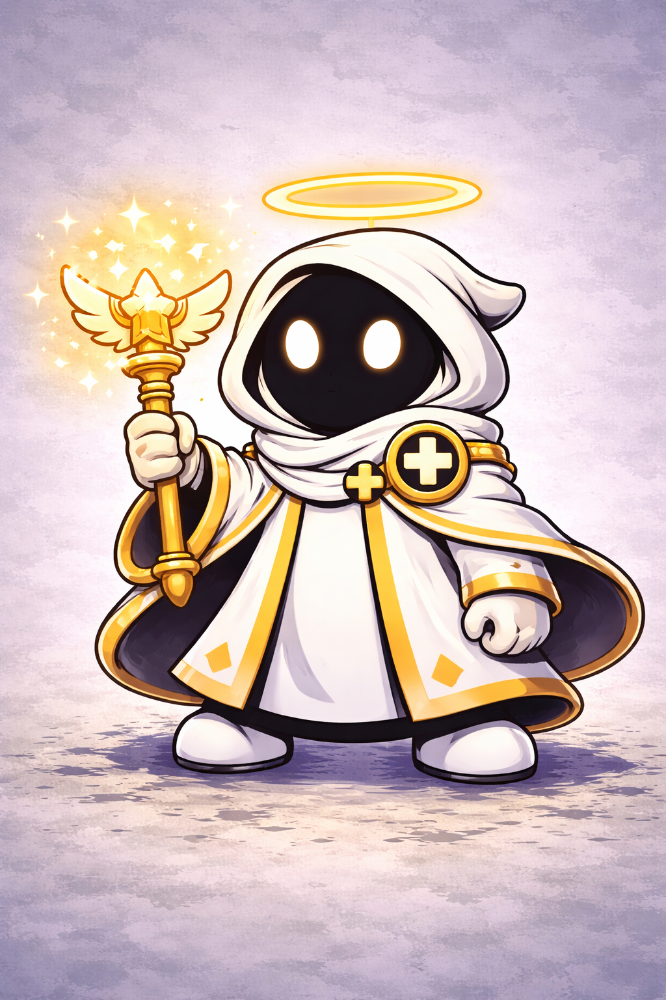

LUMEN
Rol: Apoyo
Lumen es un personaje de apoyo centrado en la curación y la protección del equipo. Su poder de luz permite mantener con vida a sus aliados y cambiar el rumbo del combate en los momentos más críticos.
Estadísticas
Vida
Daño
Velocidad
Habilidades
Ataque básico: Lanza proyectiles de luz que dañan ligeramente al enemigo.
Habilidad especial: Cura a un aliado cercano durante unos segundos.
Súper: Invoca un aura de luz que regenera la vida de todo el equipo.